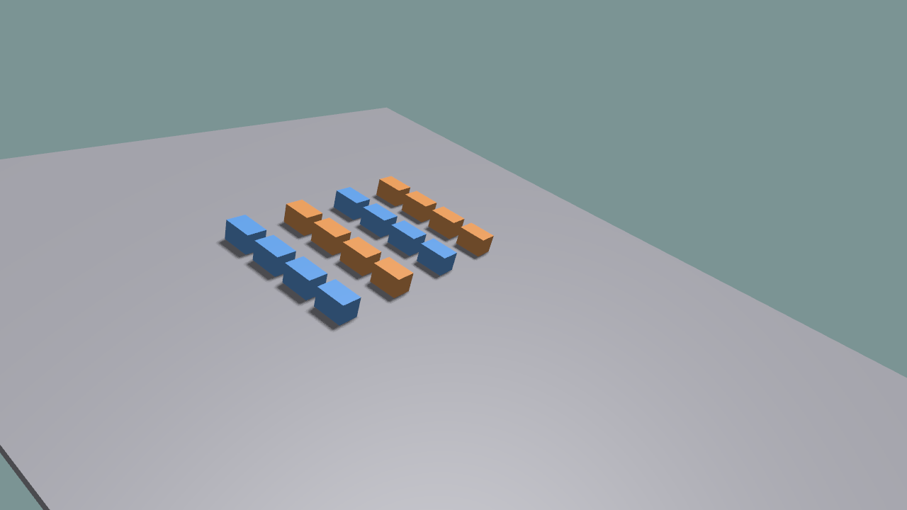

Multi-Environment Simulation¶
Create the world with the desired environment count, register the same object id in each environment, and retrieve a batched view.
world = ke.sim.KangSimWorld(num_envs=16, sim_dt=1.0 / 120.0)
for env_id in range(16):
world.add_rigid(
box_data,
env_id=env_id,
obj_id=0,
name=f"box_{env_id}",
pos=positions[env_id],
)
boxes = world.get_rigid_batch(obj_id=0)
State and reset values are batched along the first dimension:
positions = torch.zeros((16, 3), dtype=torch.float32)
rotations = torch.zeros((16, 4), dtype=torch.float32)
rotations[:, 3] = 1.0
boxes.set_root_state(None, positions, rotations)
root_pos = boxes.get_root_pos() # shape: [16, 3]
Run:
python ./python/examples/sim_world_multi_env.py --num-envs 16
Complete source: sim_world_multi_env.py
1"""Batched KangSimWorld example with multiple independent environments.
2
3This is the small ramp example: create many envs, spawn one rigid body per env,
4step them together, and read batched state tensors from ``world.state``.
5
6The example also demonstrates runtime PhysX material changes on a sloped static
7terrain. All boxes start with a low-friction material; after a short delay,
8half of the envs are switched to a high-friction material while the other half
9remains slippery. The UI shows the average downhill speed of both groups so
10friction changes can be checked while the simulation is running.
11"""
12
13from __future__ import annotations
14
15import argparse
16import math
17from pathlib import Path
18
19import torch
20
21import kangengine as ke
22from kangengine import imgui, keys
23
24
25def package_asset_path(*parts: str) -> str:
26 return str(Path(ke.__file__).resolve().parent / "assets" / Path(*parts))
27
28
29def grid_position(index: int, columns: int, spacing: float, height: float):
30 row = index // columns
31 col = index % columns
32 x = (col - (columns - 1) * 0.5) * spacing
33 y = row * spacing
34 return [x, y, height]
35
36# TDOO : make easy Cloner API
37def grid_positions(num_envs: int, columns: int, spacing: float, height: float):
38 env_ids = torch.arange(num_envs, dtype=torch.float32)
39 rows = torch.div(env_ids, columns, rounding_mode="floor")
40 cols = torch.remainder(env_ids, columns)
41 x = (cols - (columns - 1) * 0.5) * spacing
42 y = rows * spacing
43 z = torch.full_like(x, float(height))
44 return torch.stack((x, y, z), dim=1)
45
46
47def y_axis_quat_xyzw(angle_rad: float):
48 half = angle_rad * 0.5
49 return [0.0, math.sin(half), 0.0, math.cos(half)]
50
51
52def friction_group_color(env_id: int):
53 # Even envs stay low-friction/slippery. Odd envs switch to high friction at
54 # runtime. Keep colors grouped instead of using a gradient so the test reads
55 # visually at a glance.
56 if env_id % 2 == 0:
57 return [0.15, 0.45, 1.0, 1.0] # low friction: blue
58 return [1.0, 0.42, 0.12, 1.0] # runtime high friction: orange
59
60
61class MultiEnvSimWorldApp(ke.App):
62 def __init__(self, num_envs: int, friction_switch_time: float):
63 super().__init__()
64 self.num_envs = int(num_envs)
65 self.friction_switch_time = float(friction_switch_time)
66
67 def setup(self):
68 self.paused = False
69 self.sim_time = 0.0
70 self.material_update_count = 0
71 self.runtime_material_applied = False
72 self.spacing = 0.8
73 self.ramp_angle_deg = 18.0
74 self.ramp_angle = math.radians(self.ramp_angle_deg)
75 self.ramp_half_extents = [4.7, 4.0, 0.05]
76 self.ramp_pos = [0.0, 0.0, 0.0]
77 self.ramp_rot_xyzw = y_axis_quat_xyzw(self.ramp_angle)
78 self.box_half_z = 0.12
79 self.spawn_x = -2.4
80 self.columns = max(1, int(math.ceil(math.sqrt(self.num_envs))))
81 self.low_friction_envs = tuple(range(0, self.num_envs, 2))
82 self.high_friction_envs = tuple(range(1, self.num_envs, 2))
83 if not self.high_friction_envs and self.num_envs > 0:
84 self.high_friction_envs = (0,)
85 self.low_friction_envs = ()
86 self.low_friction_material = ke.physics.PhysicsMaterialDesc([0.05, 0.05, 0.0])
87 self.high_friction_material = ke.physics.PhysicsMaterialDesc([3.0, 2.5, 0.0])
88
89 self.shaders = self.create_standard_shaders()
90 self.set_camera_view([3.6, -5.0, 2.8], [0.0, 0.0, 0.6])
91
92 self.world = ke.sim.KangSimWorld(
93 num_envs=self.num_envs,
94 sim_dt=1.0 / 120.0,
95 add_ground=False,
96 )
97 self.world.physics.add_static_box(
98 self.ramp_half_extents,
99 self.ramp_pos,
100 self.ramp_rot_xyzw,
101 register_as_ground=True,
102 )
103 self.visual = ke.visual.sim.SimWorldVisualizer(self, self.world)
104 self._add_ramp_visual()
105 self.box_xml = package_asset_path("objects", "box.xml")
106 box_data = self.world.load_mjcf(self.box_xml)
107 for env_id in range(self.num_envs):
108 pos = self._ramp_spawn_position(env_id)
109 self.world.add_rigid(
110 box_data,
111 env_id=env_id,
112 obj_id=0,
113 name=f"box_{env_id}",
114 pos=pos,
115 density=60.0,
116 )
117
118 self.box = self.world.get_rigid_batch(obj_id=0)
119 # Runtime API smoke: start every rigid instance with a slippery material.
120 # Later, a subset is switched to high friction while the sim is running.
121 self.material_update_count = self.box.set_collision_material(
122 None, self.low_friction_material
123 )
124 self.box_visual_batch = self.visual.add(
125 self.box,
126 self.box_xml,
127 prim_base_path="/group/box",
128 shader=self.shaders.common,
129 color=[friction_group_color(env_id) for env_id in range(self.num_envs)],
130 )
131
132 self._reset()
133 print(f"Multi-env KangSimWorld example: num_envs={self.num_envs}")
134 print(f"root_pos tensor shape: {tuple(self.box.get_root_pos().shape)}")
135 print(
136 "Runtime friction demo: "
137 f"initial low-friction shapes updated={self.material_update_count}; "
138 f"switch high-friction envs={self.high_friction_envs} "
139 f"at t={self.friction_switch_time:.2f}s; "
140 f"ramp={self.ramp_angle_deg:.1f}deg"
141 )
142 self.check_error()
143
144 def _reset(self):
145 self.sim_time = 0.0
146 self.runtime_material_applied = False
147 self.material_update_count = self.box.set_collision_material(
148 None, self.low_friction_material
149 )
150 positions = torch.tensor(
151 [self._ramp_spawn_position(env_id) for env_id in range(self.num_envs)],
152 dtype=torch.float32,
153 )
154 rotations = torch.zeros((self.num_envs, 4), dtype=torch.float32)
155 rotations[:, 3] = 1.0 # quat xyzw
156
157 velocities = torch.zeros((self.num_envs, 3), dtype=torch.float32)
158 # +X is downhill for the ramp quaternion above.
159 velocities[:, 0] = 1.0
160 velocities[:, 1] = 0.0
161 velocities[:, 2] = 0.0
162
163 self.box.set_root_state(
164 None,
165 positions,
166 rotations,
167 linear_velocity=velocities,
168 angular_velocity=[0.0, 0.0, 0.0],
169 )
170 self.world.step(substeps=0, apply_commands=False)
171 self.visual.sync()
172
173 def preRender(self):
174 if self.was_key_pressed(keys.SPACE):
175 self.paused = not self.paused
176 if self.was_key_pressed(keys.R):
177 self._reset()
178 if self.paused:
179 return
180
181 self.world.step(substeps=2)
182 self.sim_time += self.world.sim_dt * 2
183 if (
184 not self.runtime_material_applied
185 and self.sim_time >= self.friction_switch_time
186 ):
187 self.material_update_count += self.box.set_collision_material(
188 self.high_friction_envs, self.high_friction_material
189 )
190 self.runtime_material_applied = True
191 print(
192 "Runtime friction switched: "
193 f"envs={self.high_friction_envs}, "
194 f"total_updated_shapes={self.material_update_count}"
195 )
196 self.visual.sync()
197 self.check_error()
198
199 def render(self):
200 root_pos = self.box.get_root_pos()
201 root_vel = self.box.get_root_vel()
202 mean_height = float(root_pos[:, 2].mean().item())
203 min_height = float(root_pos[:, 2].min().item())
204 max_height = float(root_pos[:, 2].max().item())
205 downhill_speed = root_vel[:, 0]
206 low_speed = self._mean_for_envs(downhill_speed, self.low_friction_envs)
207 high_speed = self._mean_for_envs(downhill_speed, self.high_friction_envs)
208
209 imgui.begin("Multi-Env Sim World")
210 imgui.text("KangSimWorld batched state example")
211 imgui.text("Space: pause/resume R: reset")
212 imgui.separator()
213 imgui.text(f"State: {'paused' if self.paused else 'running'}")
214 imgui.text(f"Envs: {self.num_envs}")
215 imgui.text(f"root_pos shape: {tuple(root_pos.shape)}")
216 imgui.text("height min/mean/max:")
217 imgui.same_line()
218 imgui.text(f"{min_height: .2f} / {mean_height: .2f} / {max_height: .2f}")
219 imgui.separator()
220 imgui.text("Runtime friction material test")
221 imgui.text(
222 f"switch: {'done' if self.runtime_material_applied else 'pending'} "
223 f"at t={self.friction_switch_time:.2f}s"
224 )
225 imgui.text(f"ramp angle: {self.ramp_angle_deg:.1f} deg")
226 imgui.text(f"updated shapes: {self.material_update_count}")
227 imgui.text(f"low friction envs: {self.low_friction_envs}")
228 imgui.text(f"high friction envs: {self.high_friction_envs}")
229 imgui.text(
230 "downhill velocity low/high: "
231 f"{low_speed: .3f} / {high_speed: .3f}"
232 )
233 imgui.end()
234
235 def _ramp_spawn_position(self, env_id: int):
236 row = env_id // self.columns
237 col = env_id % self.columns
238 y = (col - (self.columns - 1) * 0.5) * self.spacing
239 x = self.spawn_x - row * 0.45
240 z = self._ramp_top_z(x) + self.box_half_z + 0.04
241 return [x, y, z]
242
243 def _ramp_top_z(self, x: float) -> float:
244 half_t = self.ramp_half_extents[2]
245 return -math.tan(self.ramp_angle) * float(x) + half_t / math.cos(
246 self.ramp_angle
247 )
248
249 def _add_ramp_visual(self):
250 mesh_data = ke.geometry.create_box_data(
251 self.ramp_half_extents[0] * 2.0,
252 self.ramp_half_extents[1] * 2.0,
253 self.ramp_half_extents[2] * 2.0,
254 )
255 view = self.add_mesh(
256 "/terrain/inclined_box",
257 mesh_data,
258 self.shaders.common,
259 color=[0.45, 0.45, 0.5, 1.0],
260 )
261 view.prim.set_local_translation(ke.vec3(self.ramp_pos))
262 # ke.quat constructor is (w, x, y, z), while PhysX binding args above
263 # use xyzw lists.
264 view.prim.set_local_rotation(
265 ke.quat(
266 self.ramp_rot_xyzw[3],
267 self.ramp_rot_xyzw[0],
268 self.ramp_rot_xyzw[1],
269 self.ramp_rot_xyzw[2],
270 )
271 )
272 return view
273
274 @staticmethod
275 def _mean_for_envs(values: torch.Tensor, env_ids: tuple[int, ...]) -> float:
276 if not env_ids:
277 return float("nan")
278 index = torch.tensor(env_ids, dtype=torch.long, device=values.device)
279 return float(values.index_select(0, index).mean().item())
280
281 def cleanup(self):
282 if hasattr(self, "world"):
283 self.world.release()
284
285
286def parse_args():
287 parser = argparse.ArgumentParser(description=__doc__)
288 parser.add_argument("--num-envs", type=int, default=16)
289 parser.add_argument("--width", type=int, default=1280)
290 parser.add_argument("--height", type=int, default=720)
291 parser.add_argument(
292 "--friction-switch-time",
293 type=float,
294 default=1.0,
295 help="Seconds before switching odd envs to high friction at runtime.",
296 )
297 return parser.parse_args()
298
299
300def main():
301 args = parse_args()
302 app = MultiEnvSimWorldApp(args.num_envs, args.friction_switch_time)
303 app.initialize(args.width, args.height, False, ke.UpAxis.Z)
304 app.start()
305
306
307if __name__ == "__main__":
308 main()
The example compares low- and high-friction groups on a ramp and displays batched state statistics.
